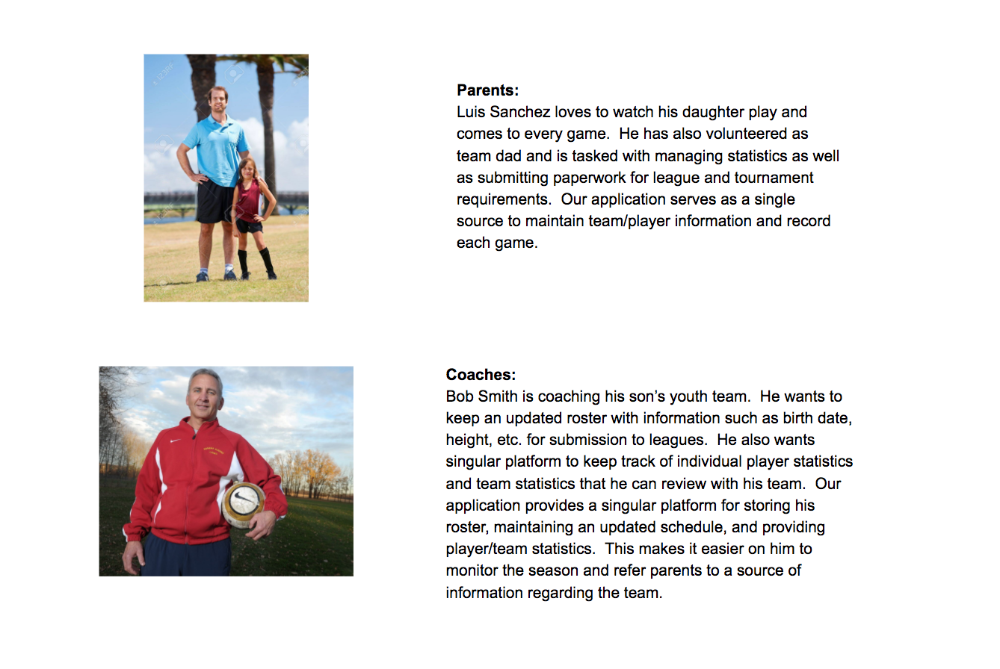
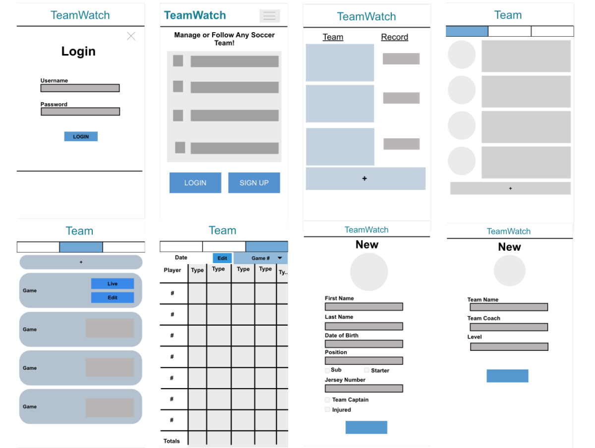
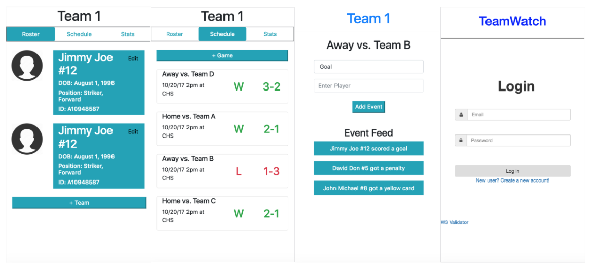

TeamWatch
Soccer Management Application

TeamWatch is a web application for soccer team management. It provides the user with tools for recording soccer team info, game schedules, and player statistics. TeamWatch also allows soccer fans to follow their favorite team’s schedule and statistic updates.
The user-centered design approach for this project goes beyond the pure visual aesthetics with a larger focus on technical aspects of user experience including performance and responsiveness. Such aspects are measured more quantitatively by load time in terms of milliseconds.
DESIGN DEVELOPMENT
To capture the requirements for the application, my team and I took the time to define our set of users as coaches, parents, players, and scouts. We fleshed out personas for each of these users to get a feel for their sentiments. Once their motivations and goals were reasonably understood, we captured them in user stories to ensure the features we built brought value to our users.
The features we decided that would best support our users included:
- Roster to keep track of players on a team
- Schedule to list upcoming and previous matches
- Both team and player statistics to track progress
- Real time statistic collection during game play
With a better understanding of the required features, we began to develop low fidelity wireframes to flesh out the structure and layout of the application. Once we determined everything was laid out in a logical and functional manner, we enhanced our wireframes to include smaller details, such as button sizes and colors.
Low-fidelity wireframes
Using our wireframes as a foundation, we implemented two static versions of our application, one using the Bootstrap framework and the other with vanilla HTML and CSS. By developing our prototype in two different ways, we compared the ease of implementation in creating desired aesthetics when using a framework versus writing from scratch. We also observed differences in file size and load times, which could affect the user experience.
DESIGN IMPLEMENTATION
With the structure of our application in place, we began to implement basic functionality using vanilla Javascript. We added the most important functions first; adding and creating teams/players, updating game schedules, and live player/team statistic updates. Implementing the core features first allowed for more flexibility to improve functionality and flow. We continuously tested our application on a low spec android phone with a slow 3G throttled network to ensure our application would load and respond within a reasonable amount of time.
Example of pages using Bootstrap framework.
The final integrated version of our application supports features such as user login/logout, live data updates, and the ability to work offline using a PWA pattern. With speed as a main focus, we optimized using file minification, bundling, and caching.
The final implementation of our TeamWatch application can be found here: teamsnipelk.firebaseapp.com
CONCLUSION
This project offered the design approach from more of a developer's perspective, taking into account user experience aspects that I didn’t realize were important. I used to think good user experience was solely dependent on functionality and flow. However, file size and load times of a web application can have profound effects on a user's impression. With both a designer and developer perspective, I feel as if I can create well rounded applications that do not compromise performance for aesthetic.
- Skills: user-centered design, HTML, CSS, Javascript
- Date: December 2017